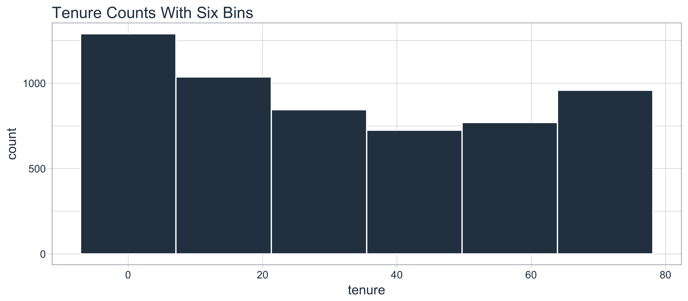
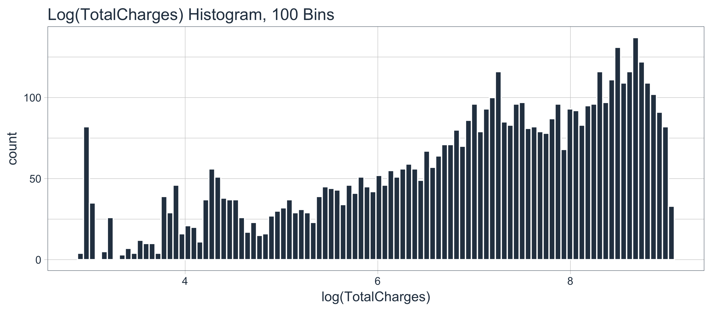
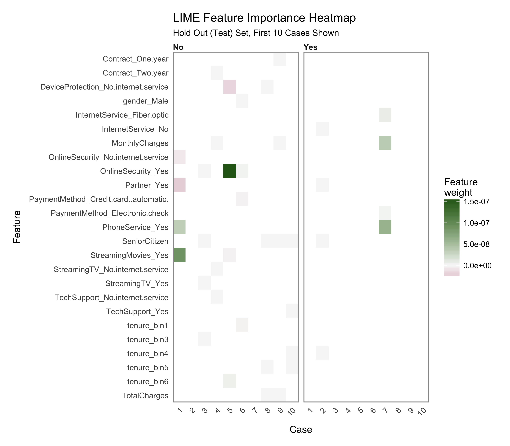
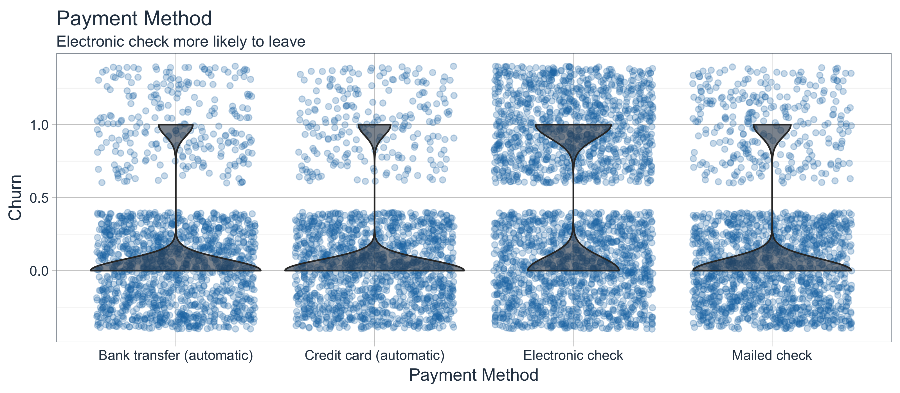
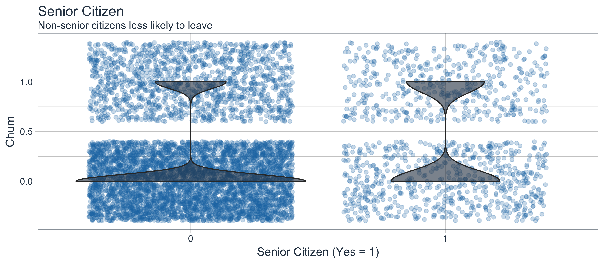

Introduction
Customer churn is a problem that all companies need to monitor, especially those that depend on subscription-based revenue streams. The simple fact is that most organizations have data that can be used to target these individuals and to understand the key drivers of churn, and we now have Keras for Deep Learning available in R (Yes, in R!!), which predicted customer churn with 82% accuracy.
We’re super excited for this article because we are using the new keras package to produce an Artificial Neural Network (ANN) model on the IBM Watson Telco Customer Churn Data Set! As with most business problems, it’s equally important to explain what features drive the model, which is why we’ll use the lime package for explainability. We cross-checked the LIME results with a Correlation Analysis using the corrr package.
In addition, we use three new packages to assist with Machine Learning (ML): recipes for preprocessing, rsample for sampling data and yardstick for model metrics. These are relatively new additions to CRAN developed by Max Kuhn at RStudio (creator of the caret package). It seems that R is quickly developing ML tools that rival Python. Good news if you’re interested in applying Deep Learning in R! We are so let’s get going!!
Customer Churn: Hurts Sales, Hurts Company
Customer churn refers to the situation when a customer ends their relationship with a company, and it’s a costly problem. Customers are the fuel that powers a business. Loss of customers impacts sales. Further, it’s much more difficult and costly to gain new customers than it is to retain existing customers. As a result, organizations need to focus on reducing customer churn.
The good news is that machine learning can help. For many businesses that offer subscription based services, it’s critical to both predict customer churn and explain what features relate to customer churn. Older techniques such as logistic regression can be less accurate than newer techniques such as deep learning, which is why we are going to show you how to model an ANN in R with the keras package.
Churn Modeling With Artificial Neural Networks (Keras)
Artificial Neural Networks (ANN) are now a staple within the sub-field of Machine Learning called Deep Learning. Deep learning algorithms can be vastly superior to traditional regression and classification methods (e.g. linear and logistic regression) because of the ability to model interactions between features that would otherwise go undetected. The challenge becomes explainability, which is often needed to support the business case. The good news is we get the best of both worlds with keras and lime.
IBM Watson Dataset (Where We Got The Data)
The dataset used for this tutorial is IBM Watson Telco Dataset. According to IBM, the business challenge is…
A telecommunications company [Telco] is concerned about the number of customers leaving their landline business for cable competitors. They need to understand who is leaving. Imagine that you’re an analyst at this company and you have to find out who is leaving and why.
The dataset includes information about:
- Customers who left within the last month: The column is called Churn
- Services that each customer has signed up for: phone, multiple lines, internet, online security, online backup, device protection, tech support, and streaming TV and movies
- Customer account information: how long they’ve been a customer, contract, payment method, paperless billing, monthly charges, and total charges
- Demographic info about customers: gender, age range, and if they have partners and dependents
Deep Learning With Keras (What We Did With The Data)
In this example we show you how to use keras to develop a sophisticated and highly accurate deep learning model in R. We walk you through the preprocessing steps, investing time into how to format the data for Keras. We inspect the various classification metrics, and show that an un-tuned ANN model can easily get 82% accuracy on the unseen data. Here’s the deep learning training history visualization.

We have some fun with preprocessing the data (yes, preprocessing can actually be fun and easy!). We use the new recipes package to simplify the preprocessing workflow.
We end by showing you how to explain the ANN with the lime package. Neural networks used to be frowned upon because of the “black box” nature meaning these sophisticated models (ANNs are highly accurate) are difficult to explain using traditional methods. Not any more with LIME! Here’s the feature importance visualization.

We also cross-checked the LIME results with a Correlation Analysis using the corrr package. Here’s the correlation visualization.

We even built a Shiny Application with a Customer Scorecard to monitor customer churn risk and to make recommendations on how to improve customer health! Feel free to take it for a spin.
Credits
We saw that just last week the same Telco customer churn dataset was used in the article, Predict Customer Churn – Logistic Regression, Decision Tree and Random Forest. We thought the article was excellent.
This article takes a different approach with Keras, LIME, Correlation Analysis, and a few other cutting edge packages. We encourage the readers to check out both articles because, although the problem is the same, both solutions are beneficial to those learning data science and advanced modeling.
Prerequisites
We use the following libraries in this tutorial:
- keras: Library that ports Keras from Python enabling deep learning in R. Visit the documentation for more information.
- lime: Used to explain the predictions of black box classifiers. Deep Learning falls into this category.
- tidyquant: Loads the tidyverse (dplyr, ggplot2, etc) and has nice visualization functions with theme_tq(). Visit the tidyquant documentation and the tidyverse documentation for more information on the individual packages.
- rsample: New package for generating resamples. Visit the documentation for more information.
- recipes: New package for preprocessing machine learning data sets. Visit the documentation for more information.
- yardstick: Tidy methods for measuring model performance. Visit the GitHub Page for more information.
- corrr: Tidy methods for correlation. Visit the GitHub Page for more information.
Install the following packages with install.packages().
pkgs <- c("keras", "lime", "tidyquant", "rsample", "recipes", "yardstick", "corrr")
install.packages(pkgs)
Load Libraries
Load the libraries.
If you have not previously run Keras in R, you will need to install Keras using the install_keras() function.
# Install Keras if you have not installed before
install_keras()
Import Data
Download the IBM Watson Telco Data Set here. Next, use read_csv() to import the data into a nice tidy data frame. We use the glimpse() function to quickly inspect the data. We have the target “Churn” and all other variables are potential predictors. The raw data set needs to be cleaned and preprocessed for ML.
churn_data_raw <- read_csv("WA_Fn-UseC_-Telco-Customer-Churn.csv")
glimpse(churn_data_raw)
Observations: 7,043
Variables: 21
$ customerID <chr> "7590-VHVEG", "5575-GNVDE", "3668-QPYBK", "77...
$ gender <chr> "Female", "Male", "Male", "Male", "Female", "...
$ SeniorCitizen <int> 0, 0, 0, 0, 0, 0, 0, 0, 0, 0, 0, 0, 0, 0, 0, ...
$ Partner <chr> "Yes", "No", "No", "No", "No", "No", "No", "N...
$ Dependents <chr> "No", "No", "No", "No", "No", "No", "Yes", "N...
$ tenure <int> 1, 34, 2, 45, 2, 8, 22, 10, 28, 62, 13, 16, 5...
$ PhoneService <chr> "No", "Yes", "Yes", "No", "Yes", "Yes", "Yes"...
$ MultipleLines <chr> "No phone service", "No", "No", "No phone ser...
$ InternetService <chr> "DSL", "DSL", "DSL", "DSL", "Fiber optic", "F...
$ OnlineSecurity <chr> "No", "Yes", "Yes", "Yes", "No", "No", "No", ...
$ OnlineBackup <chr> "Yes", "No", "Yes", "No", "No", "No", "Yes", ...
$ DeviceProtection <chr> "No", "Yes", "No", "Yes", "No", "Yes", "No", ...
$ TechSupport <chr> "No", "No", "No", "Yes", "No", "No", "No", "N...
$ StreamingTV <chr> "No", "No", "No", "No", "No", "Yes", "Yes", "...
$ StreamingMovies <chr> "No", "No", "No", "No", "No", "Yes", "No", "N...
$ Contract <chr> "Month-to-month", "One year", "Month-to-month...
$ PaperlessBilling <chr> "Yes", "No", "Yes", "No", "Yes", "Yes", "Yes"...
$ PaymentMethod <chr> "Electronic check", "Mailed check", "Mailed c...
$ MonthlyCharges <dbl> 29.85, 56.95, 53.85, 42.30, 70.70, 99.65, 89....
$ TotalCharges <dbl> 29.85, 1889.50, 108.15, 1840.75, 151.65, 820....
$ Churn <chr> "No", "No", "Yes", "No", "Yes", "Yes", "No", ...Preprocess Data
We’ll go through a few steps to preprocess the data for ML. First, we “prune” the data, which is nothing more than removing unnecessary columns and rows. Then we split into training and testing sets. After that we explore the training set to uncover transformations that will be needed for deep learning. We save the best for last. We end by preprocessing the data with the new recipes package.
Prune The Data
The data has a few columns and rows we’d like to remove:
- The “customerID” column is a unique identifier for each observation that isn’t needed for modeling. We can de-select this column.
- The data has 11
NAvalues all in the “TotalCharges” column. Because it’s such a small percentage of the total population (99.8% complete cases), we can drop these observations with thedrop_na()function from tidyr. Note that these may be customers that have not yet been charged, and therefore an alternative is to replace with zero or -99 to segregate this population from the rest. - My preference is to have the target in the first column so we’ll include a final select() ooperation to do so.
We’ll perform the cleaning operation with one tidyverse pipe (%>%) chain.
# Remove unnecessary data
churn_data_tbl <- churn_data_raw %>%
select(-customerID) %>%
drop_na() %>%
select(Churn, everything())
glimpse(churn_data_tbl)
Observations: 7,032
Variables: 20
$ Churn <chr> "No", "No", "Yes", "No", "Yes", "Yes", "No", ...
$ gender <chr> "Female", "Male", "Male", "Male", "Female", "...
$ SeniorCitizen <int> 0, 0, 0, 0, 0, 0, 0, 0, 0, 0, 0, 0, 0, 0, 0, ...
$ Partner <chr> "Yes", "No", "No", "No", "No", "No", "No", "N...
$ Dependents <chr> "No", "No", "No", "No", "No", "No", "Yes", "N...
$ tenure <int> 1, 34, 2, 45, 2, 8, 22, 10, 28, 62, 13, 16, 5...
$ PhoneService <chr> "No", "Yes", "Yes", "No", "Yes", "Yes", "Yes"...
$ MultipleLines <chr> "No phone service", "No", "No", "No phone ser...
$ InternetService <chr> "DSL", "DSL", "DSL", "DSL", "Fiber optic", "F...
$ OnlineSecurity <chr> "No", "Yes", "Yes", "Yes", "No", "No", "No", ...
$ OnlineBackup <chr> "Yes", "No", "Yes", "No", "No", "No", "Yes", ...
$ DeviceProtection <chr> "No", "Yes", "No", "Yes", "No", "Yes", "No", ...
$ TechSupport <chr> "No", "No", "No", "Yes", "No", "No", "No", "N...
$ StreamingTV <chr> "No", "No", "No", "No", "No", "Yes", "Yes", "...
$ StreamingMovies <chr> "No", "No", "No", "No", "No", "Yes", "No", "N...
$ Contract <chr> "Month-to-month", "One year", "Month-to-month...
$ PaperlessBilling <chr> "Yes", "No", "Yes", "No", "Yes", "Yes", "Yes"...
$ PaymentMethod <chr> "Electronic check", "Mailed check", "Mailed c...
$ MonthlyCharges <dbl> 29.85, 56.95, 53.85, 42.30, 70.70, 99.65, 89....
$ TotalCharges <dbl> 29.85, 1889.50, 108.15, 1840.75, 151.65, 820..Split Into Train/Test Sets
We have a new package, rsample, which is very useful for sampling methods. It has the initial_split() function for splitting data sets into training and testing sets. The return is a special rsplit object.
# Split test/training sets
set.seed(100)
train_test_split <- initial_split(churn_data_tbl, prop = 0.8)
train_test_split
<5626/1406/7032>We can retrieve our training and testing sets using training() and testing() functions.
# Retrieve train and test sets
train_tbl <- training(train_test_split)
test_tbl <- testing(train_test_split)
Exploration: What Transformation Steps Are Needed For ML?
This phase of the analysis is often called exploratory analysis, but basically we are trying to answer the question, “What steps are needed to prepare for ML?” The key concept is knowing what transformations are needed to run the algorithm most effectively. Artificial Neural Networks are best when the data is one-hot encoded, scaled and centered. In addition, other transformations may be beneficial as well to make relationships easier for the algorithm to identify. A full exploratory analysis is not practical in this article. With that said we’ll cover a few tips on transformations that can help as they relate to this dataset. In the next section, we will implement the preprocessing techniques.
Discretize The “tenure” Feature
Numeric features like age, years worked, length of time in a position can generalize a group (or cohort). We see this in marketing a lot (think “millennials”, which identifies a group born in a certain timeframe). The “tenure” feature falls into this category of numeric features that can be discretized into groups.

We can split into six cohorts that divide up the user base by tenure in roughly one year (12 month) increments. This should help the ML algorithm detect if a group is more/less susceptible to customer churn.

Transform The “TotalCharges” Feature
What we don’t like to see is when a lot of observations are bunched within a small part of the range.

We can use a log transformation to even out the data into more of a normal distribution. It’s not perfect, but it’s quick and easy to get our data spread out a bit more.

Pro Tip: A quick test is to see if the log transformation increases the magnitude of the correlation between “TotalCharges” and “Churn”. We’ll use a few dplyr operations along with the corrr package to perform a quick correlation.
correlate(): Performs tidy correlations on numeric datafocus(): Similar toselect(). Takes columns and focuses on only the rows/columns of importance.fashion(): Makes the formatting aesthetically easier to read.
# Determine if log transformation improves correlation
# between TotalCharges and Churn
train_tbl %>%
select(Churn, TotalCharges) %>%
mutate(
Churn = Churn %>% as.factor() %>% as.numeric(),
LogTotalCharges = log(TotalCharges)
) %>%
correlate() %>%
focus(Churn) %>%
fashion()
rowname Churn
1 TotalCharges -.20
2 LogTotalCharges -.25The correlation between “Churn” and “LogTotalCharges” is greatest in magnitude indicating the log transformation should improve the accuracy of the ANN model we build. Therefore, we should perform the log transformation.
One-Hot Encoding
One-hot encoding is the process of converting categorical data to sparse data, which has columns of only zeros and ones (this is also called creating “dummy variables” or a “design matrix”). All non-numeric data will need to be converted to dummy variables. This is simple for binary Yes/No data because we can simply convert to 1’s and 0’s. It becomes slightly more complicated with multiple categories, which requires creating new columns of 1’s and 0`s for each category (actually one less). We have four features that are multi-category: Contract, Internet Service, Multiple Lines, and Payment Method.

Feature Scaling
ANN’s typically perform faster and often times with higher accuracy when the features are scaled and/or normalized (aka centered and scaled, also known as standardizing). Because ANNs use gradient descent, weights tend to update faster. According to Sebastian Raschka, an expert in the field of Deep Learning, several examples when feature scaling is important are:
- k-nearest neighbors with an Euclidean distance measure if want all features to contribute equally
- k-means (see k-nearest neighbors)
- logistic regression, SVMs, perceptrons, neural networks etc. if you are using gradient descent/ascent-based optimization, otherwise some weights will update much faster than others
- linear discriminant analysis, principal component analysis, kernel principal component analysis since you want to find directions of maximizing the variance (under the constraints that those directions/eigenvectors/principal components are orthogonal); you want to have features on the same scale since you’d emphasize variables on “larger measurement scales” more. There are many more cases than I can possibly list here … I always recommend you to think about the algorithm and what it’s doing, and then it typically becomes obvious whether we want to scale your features or not.
The interested reader can read Sebastian Raschka’s article for a full discussion on the scaling/normalization topic. Pro Tip: When in doubt, standardize the data.
Preprocessing With Recipes
Let’s implement the preprocessing steps/transformations uncovered during our exploration. Max Kuhn (creator of caret) has been putting some work into Rlang ML tools lately, and the payoff is beginning to take shape. A new package, recipes, makes creating ML data preprocessing workflows a breeze! It takes a little getting used to, but I’ve found that it really helps manage the preprocessing steps. We’ll go over the nitty gritty as it applies to this problem.
Step 1: Create A Recipe
A “recipe” is nothing more than a series of steps you would like to perform on the training, testing and/or validation sets. Think of preprocessing data like baking a cake (I’m not a baker but stay with me). The recipe is our steps to make the cake. It doesn’t do anything other than create the playbook for baking.
We use the recipe() function to implement our preprocessing steps. The function takes a familiar object argument, which is a modeling function such as object = Churn ~ . meaning “Churn” is the outcome (aka response, predictor, target) and all other features are predictors. The function also takes the data argument, which gives the “recipe steps” perspective on how to apply during baking (next).
A recipe is not very useful until we add “steps”, which are used to transform the data during baking. The package contains a number of useful “step functions” that can be applied. The entire list of Step Functions can be viewed here. For our model, we use:
step_discretize()with theoption = list(cuts = 6)to cut the continuous variable for “tenure” (number of years as a customer) to group customers into cohorts.step_log()to log transform “TotalCharges”.step_dummy()to one-hot encode the categorical data. Note that this adds columns of one/zero for categorical data with three or more categories.step_center()to mean-center the data.step_scale()to scale the data.
The last step is to prepare the recipe with the prep() function. This step is used to “estimate the required parameters from a training set that can later be applied to other data sets”. This is important for centering and scaling and other functions that use parameters defined from the training set.
Here’s how simple it is to implement the preprocessing steps that we went over!
# Create recipe
rec_obj <- recipe(Churn ~ ., data = train_tbl) %>%
step_discretize(tenure, options = list(cuts = 6)) %>%
step_log(TotalCharges) %>%
step_dummy(all_nominal(), -all_outcomes()) %>%
step_center(all_predictors(), -all_outcomes()) %>%
step_scale(all_predictors(), -all_outcomes()) %>%
prep(data = train_tbl)
We can print the recipe object if we ever forget what steps were used to prepare the data. Pro Tip: We can save the recipe object as an RDS file using saveRDS(), and then use it to bake() (discussed next) future raw data into ML-ready data in production!
# Print the recipe object
rec_obj
Data Recipe
Inputs:
role #variables
outcome 1
predictor 19
Training data contained 5626 data points and no missing data.
Steps:
Dummy variables from tenure [trained]
Log transformation on TotalCharges [trained]
Dummy variables from ~gender, ~Partner, ... [trained]
Centering for SeniorCitizen, ... [trained]
Scaling for SeniorCitizen, ... [trained]Step 2: Baking With Your Recipe
Now for the fun part! We can apply the “recipe” to any data set with the bake() function, and it processes the data following our recipe steps. We’ll apply to our training and testing data to convert from raw data to a machine learning dataset. Check our training set out with glimpse(). Now that’s an ML-ready dataset prepared for ANN modeling!!
Observations: 5,626
Variables: 35
$ SeniorCitizen <dbl> -0.4351959, -0.4351...
$ MonthlyCharges <dbl> -1.1575972, -0.2601...
$ TotalCharges <dbl> -2.275819130, 0.389...
$ gender_Male <dbl> -1.0016900, 0.99813...
$ Partner_Yes <dbl> 1.0262054, -0.97429...
$ Dependents_Yes <dbl> -0.6507747, -0.6507...
$ tenure_bin1 <dbl> 2.1677790, -0.46121...
$ tenure_bin2 <dbl> -0.4389453, -0.4389...
$ tenure_bin3 <dbl> -0.4481273, -0.4481...
$ tenure_bin4 <dbl> -0.4509837, 2.21698...
$ tenure_bin5 <dbl> -0.4498419, -0.4498...
$ tenure_bin6 <dbl> -0.4337508, -0.4337...
$ PhoneService_Yes <dbl> -3.0407367, 0.32880...
$ MultipleLines_No.phone.service <dbl> 3.0407367, -0.32880...
$ MultipleLines_Yes <dbl> -0.8571364, -0.8571...
$ InternetService_Fiber.optic <dbl> -0.8884255, -0.8884...
$ InternetService_No <dbl> -0.5272627, -0.5272...
$ OnlineSecurity_No.internet.service <dbl> -0.5272627, -0.5272...
$ OnlineSecurity_Yes <dbl> -0.6369654, 1.56966...
$ OnlineBackup_No.internet.service <dbl> -0.5272627, -0.5272...
$ OnlineBackup_Yes <dbl> 1.3771987, -0.72598...
$ DeviceProtection_No.internet.service <dbl> -0.5272627, -0.5272...
$ DeviceProtection_Yes <dbl> -0.7259826, 1.37719...
$ TechSupport_No.internet.service <dbl> -0.5272627, -0.5272...
$ TechSupport_Yes <dbl> -0.6358628, -0.6358...
$ StreamingTV_No.internet.service <dbl> -0.5272627, -0.5272...
$ StreamingTV_Yes <dbl> -0.7917326, -0.7917...
$ StreamingMovies_No.internet.service <dbl> -0.5272627, -0.5272...
$ StreamingMovies_Yes <dbl> -0.797388, -0.79738...
$ Contract_One.year <dbl> -0.5156834, 1.93882...
$ Contract_Two.year <dbl> -0.5618358, -0.5618...
$ PaperlessBilling_Yes <dbl> 0.8330334, -1.20021...
$ PaymentMethod_Credit.card..automatic. <dbl> -0.5231315, -0.5231...
$ PaymentMethod_Electronic.check <dbl> 1.4154085, -0.70638...
$ PaymentMethod_Mailed.check <dbl> -0.5517013, 1.81225...Step 3: Don’t Forget The Target
One last step, we need to store the actual values (truth) as y_train_vec and y_test_vec, which are needed for modeling our ANN. We convert to a series of numeric ones and zeros which can be accepted by the Keras ANN modeling functions. We add “vec” to the name so we can easily remember the class of the object (it’s easy to get confused when working with tibbles, vectors, and matrix data types).
Model Customer Churn With Keras (Deep Learning)
This is super exciting!! Finally, Deep Learning with Keras in R! The team at RStudio has done fantastic work recently to create the keras package, which implements Keras in R. Very cool!
Background On Artifical Neural Networks
For those unfamiliar with Neural Networks (and those that need a refresher), read this article. It’s very comprehensive, and you’ll leave with a general understanding of the types of deep learning and how they work.

Source: Xenon Stack
Deep Learning has been available in R for some time, but the primary packages used in the wild have not (this includes Keras, Tensor Flow, Theano, etc, which are all Python libraries). It’s worth mentioning that a number of other Deep Learning packages exist in R including h2o, mxnet, and others. The interested reader can check out this blog post for a comparison of deep learning packages in R.
Building A Deep Learning Model
We’re going to build a special class of ANN called a Multi-Layer Perceptron (MLP). MLPs are one of the simplest forms of deep learning, but they are both highly accurate and serve as a jumping-off point for more complex algorithms. MLPs are quite versatile as they can be used for regression, binary and multi classification (and are typically quite good at classification problems).
We’ll build a three layer MLP with Keras. Let’s walk-through the steps before we implement in R.
Initialize a sequential model: The first step is to initialize a sequential model with
keras_model_sequential(), which is the beginning of our Keras model. The sequential model is composed of a linear stack of layers.Apply layers to the sequential model: Layers consist of the input layer, hidden layers and an output layer. The input layer is the data and provided it’s formatted correctly there’s nothing more to discuss. The hidden layers and output layers are what controls the ANN inner workings.
Hidden Layers: Hidden layers form the neural network nodes that enable non-linear activation using weights. The hidden layers are created using
layer_dense(). We’ll add two hidden layers. We’ll applyunits = 16, which is the number of nodes. We’ll selectkernel_initializer = "uniform"andactivation = "relu"for both layers. The first layer needs to have theinput_shape = 35, which is the number of columns in the training set. Key Point: While we are arbitrarily selecting the number of hidden layers, units, kernel initializers and activation functions, these parameters can be optimized through a process called hyperparameter tuning that is discussed in Next Steps.Dropout Layers: Dropout layers are used to control overfitting. This eliminates weights below a cutoff threshold to prevent low weights from overfitting the layers. We use the
layer_dropout()function add two drop out layers withrate = 0.10to remove weights below 10%.Output Layer: The output layer specifies the shape of the output and the method of assimilating the learned information. The output layer is applied using the
layer_dense(). For binary values, the shape should beunits = 1. For multi-classification, theunitsshould correspond to the number of classes. We set thekernel_initializer = "uniform"and theactivation = "sigmoid"(common for binary classification).
Compile the model: The last step is to compile the model with
compile(). We’ll useoptimizer = "adam", which is one of the most popular optimization algorithms. We selectloss = "binary_crossentropy"since this is a binary classification problem. We’ll selectmetrics = c("accuracy")to be evaluated during training and testing. Key Point: The optimizer is often included in the tuning process.
Let’s codify the discussion above to build our Keras MLP-flavored ANN model.
# Building our Artificial Neural Network
model_keras <- keras_model_sequential()
model_keras %>%
# First hidden layer
layer_dense(
units = 16,
kernel_initializer = "uniform",
activation = "relu",
input_shape = ncol(x_train_tbl)) %>%
# Dropout to prevent overfitting
layer_dropout(rate = 0.1) %>%
# Second hidden layer
layer_dense(
units = 16,
kernel_initializer = "uniform",
activation = "relu") %>%
# Dropout to prevent overfitting
layer_dropout(rate = 0.1) %>%
# Output layer
layer_dense(
units = 1,
kernel_initializer = "uniform",
activation = "sigmoid") %>%
# Compile ANN
compile(
optimizer = 'adam',
loss = 'binary_crossentropy',
metrics = c('accuracy')
)
keras_model
Model
___________________________________________________________________________________________________
Layer (type) Output Shape Param #
===================================================================================================
dense_1 (Dense) (None, 16) 576
___________________________________________________________________________________________________
dropout_1 (Dropout) (None, 16) 0
___________________________________________________________________________________________________
dense_2 (Dense) (None, 16) 272
___________________________________________________________________________________________________
dropout_2 (Dropout) (None, 16) 0
___________________________________________________________________________________________________
dense_3 (Dense) (None, 1) 17
===================================================================================================
Total params: 865
Trainable params: 865
Non-trainable params: 0
___________________________________________________________________________________________________We use the fit() function to run the ANN on our training data. The object is our model, and x and y are our training data in matrix and numeric vector forms, respectively. The batch_size = 50 sets the number samples per gradient update within each epoch. We set epochs = 35 to control the number training cycles. Typically we want to keep the batch size high since this decreases the error within each training cycle (epoch). We also want epochs to be large, which is important in visualizing the training history (discussed below). We set validation_split = 0.30 to include 30% of the data for model validation, which prevents overfitting. The training process should complete in 15 seconds or so.
# Fit the keras model to the training data
history <- fit(
object = model_keras,
x = as.matrix(x_train_tbl),
y = y_train_vec,
batch_size = 50,
epochs = 35,
validation_split = 0.30
)
We can inspect the training history. We want to make sure there is minimal difference between the validation accuracy and the training accuracy.
# Print a summary of the training history
print(history)
Trained on 3,938 samples, validated on 1,688 samples (batch_size=50, epochs=35)
Final epoch (plot to see history):
val_loss: 0.4215
val_acc: 0.8057
loss: 0.399
acc: 0.8101We can visualize the Keras training history using the plot() function. What we want to see is the validation accuracy and loss leveling off, which means the model has completed training. We see that there is some divergence between training loss/accuracy and validation loss/accuracy. This model indicates we can possibly stop training at an earlier epoch. Pro Tip: Only use enough epochs to get a high validation accuracy. Once validation accuracy curve begins to flatten or decrease, it’s time to stop training.
# Plot the training/validation history of our Keras model
plot(history)

Making Predictions
We’ve got a good model based on the validation accuracy. Now let’s make some predictions from our keras model on the test data set, which was unseen during modeling (we use this for the true performance assessment). We have two functions to generate predictions:
predict_classes(): Generates class values as a matrix of ones and zeros. Since we are dealing with binary classification, we’ll convert the output to a vector.predict_proba(): Generates the class probabilities as a numeric matrix indicating the probability of being a class. Again, we convert to a numeric vector because there is only one column output.
Inspect Performance With Yardstick
The yardstick package has a collection of handy functions for measuring performance of machine learning models. We’ll overview some metrics we can use to understand the performance of our model.
First, let’s get the data formatted for yardstick. We create a data frame with the truth (actual values as factors), estimate (predicted values as factors), and the class probability (probability of yes as numeric). We use the fct_recode() function from the forcats package to assist with recoding as Yes/No values.
# A tibble: 1,406 x 3
truth estimate class_prob
<fctr> <fctr> <dbl>
1 yes no 0.328355074
2 yes yes 0.633630514
3 no no 0.004589651
4 no no 0.007402068
5 no no 0.049968336
6 no no 0.116824441
7 no yes 0.775479317
8 no no 0.492996633
9 no no 0.011550998
10 no no 0.004276015
# ... with 1,396 more rowsNow that we have the data formatted, we can take advantage of the yardstick package. The only other thing we need to do is to set options(yardstick.event_first = FALSE). As pointed out by ad1729 in GitHub Issue 13, the default is to classify 0 as the positive class instead of 1.
options(yardstick.event_first = FALSE)
Confusion Table
We can use the conf_mat() function to get the confusion table. We see that the model was by no means perfect, but it did a decent job of identifying customers likely to churn.
# Confusion Table
estimates_keras_tbl %>% conf_mat(truth, estimate)
Truth
Prediction no yes
no 950 161
yes 99 196Accuracy
We can use the metrics() function to get an accuracy measurement from the test set. We are getting roughly 82% accuracy.
# Accuracy
estimates_keras_tbl %>% metrics(truth, estimate)
# A tibble: 1 x 1
accuracy
<dbl>
1 0.8150782AUC
We can also get the ROC Area Under the Curve (AUC) measurement. AUC is often a good metric used to compare different classifiers and to compare to randomly guessing (AUC_random = 0.50). Our model has AUC = 0.85, which is much better than randomly guessing. Tuning and testing different classification algorithms may yield even better results.
# AUC
estimates_keras_tbl %>% roc_auc(truth, class_prob)
[1] 0.8523951Precision And Recall
Precision is when the model predicts “yes”, how often is it actually “yes”. Recall (also true positive rate or specificity) is when the actual value is “yes” how often is the model correct. We can get precision() and recall() measurements using yardstick.
# Precision
tibble(
precision = estimates_keras_tbl %>% precision(truth, estimate),
recall = estimates_keras_tbl %>% recall(truth, estimate)
)
# A tibble: 1 x 2
precision recall
<dbl> <dbl>
1 0.6644068 0.5490196Precision and recall are very important to the business case: The organization is concerned with balancing the cost of targeting and retaining customers at risk of leaving with the cost of inadvertently targeting customers that are not planning to leave (and potentially decreasing revenue from this group). The threshold above which to predict Churn = “Yes” can be adjusted to optimize for the business problem. This becomes an Customer Lifetime Value optimization problem that is discussed further in Next Steps.
F1 Score
We can also get the F1-score, which is a weighted average between the precision and recall. Machine learning classifier thresholds are often adjusted to maximize the F1-score. However, this is often not the optimal solution to the business problem.
# F1-Statistic
estimates_keras_tbl %>% f_meas(truth, estimate, beta = 1)
[1] 0.601227Explain The Model With LIME
LIME stands for Local Interpretable Model-agnostic Explanations, and is a method for explaining black-box machine learning model classifiers. For those new to LIME, this YouTube video does a really nice job explaining how LIME helps to identify feature importance with black box machine learning models (e.g. deep learning, stacked ensembles, random forest).
Setup
The lime package implements LIME in R. One thing to note is that it’s not setup out-of-the-box to work with keras. The good news is with a few functions we can get everything working properly. We’ll need to make two custom functions:
model_type: Used to telllimewhat type of model we are dealing with. It could be classification, regression, survival, etc.predict_model: Used to allowlimeto perform predictions that its algorithm can interpret.
The first thing we need to do is identify the class of our model object. We do this with the class() function.
class(model_keras)
[1] "keras.models.Sequential"
[2] "keras.engine.training.Model"
[3] "keras.engine.topology.Container"
[4] "keras.engine.topology.Layer"
[5] "python.builtin.object"Next we create our model_type() function. It’s only input is x the keras model. The function simply returns “classification”, which tells LIME we are classifying.
# Setup lime::model_type() function for keras
model_type.keras.models.Sequential <- function(x, ...) {
"classification"
}
Now we can create our predict_model() function, which wraps keras::predict_proba(). The trick here is to realize that it’s inputs must be x a model, newdata a dataframe object (this is important), and type which is not used but can be use to switch the output type. The output is also a little tricky because it must be in the format of probabilities by classification (this is important; shown next).
# Setup lime::predict_model() function for keras
predict_model.keras.models.Sequential <- function(x, newdata, type, ...) {
pred <- predict_proba(object = x, x = as.matrix(newdata))
data.frame(Yes = pred, No = 1 - pred)
}
Run this next script to show you what the output looks like and to test our predict_model() function. See how it’s the probabilities by classification. It must be in this form for model_type = "classification".
# Test our predict_model() function
predict_model(x = model_keras, newdata = x_test_tbl, type = 'raw') %>%
tibble::as_tibble()
# A tibble: 1,406 x 2
Yes No
<dbl> <dbl>
1 0.328355074 0.6716449
2 0.633630514 0.3663695
3 0.004589651 0.9954103
4 0.007402068 0.9925979
5 0.049968336 0.9500317
6 0.116824441 0.8831756
7 0.775479317 0.2245207
8 0.492996633 0.5070034
9 0.011550998 0.9884490
10 0.004276015 0.9957240
# ... with 1,396 more rowsNow the fun part, we create an explainer using the lime() function. Just pass the training data set without the “Attribution column”. The form must be a data frame, which is OK since our predict_model function will switch it to an keras object. Set model = automl_leader our leader model, and bin_continuous = FALSE. We could tell the algorithm to bin continuous variables, but this may not make sense for categorical numeric data that we didn’t change to factors.
# Run lime() on training set
explainer <- lime::lime(
x = x_train_tbl,
model = model_keras,
bin_continuous = FALSE
)
Now we run the explain() function, which returns our explanation. This can take a minute to run so we limit it to just the first ten rows of the test data set. We set n_labels = 1 because we care about explaining a single class. Setting n_features = 4 returns the top four features that are critical to each case. Finally, setting kernel_width = 0.5 allows us to increase the “model_r2” value by shrinking the localized evaluation.
# Run explain() on explainer
explanation <- lime::explain(
x_test_tbl[1:10, ],
explainer = explainer,
n_labels = 1,
n_features = 4,
kernel_width = 0.5
)
Feature Importance Visualization
The payoff for the work we put in using LIME is this feature importance plot. This allows us to visualize each of the first ten cases (observations) from the test data. The top four features for each case are shown. Note that they are not the same for each case. The green bars mean that the feature supports the model conclusion, and the red bars contradict. A few important features based on frequency in first ten cases:
- Tenure (7 cases)
- Senior Citizen (5 cases)
- Online Security (4 cases)
plot_features(explanation) +
labs(title = "LIME Feature Importance Visualization",
subtitle = "Hold Out (Test) Set, First 10 Cases Shown")

Another excellent visualization can be performed using plot_explanations(), which produces a facetted heatmap of all case/label/feature combinations. It’s a more condensed version of plot_features(), but we need to be careful because it does not provide exact statistics and it makes it less easy to investigate binned features (Notice that “tenure” would not be identified as a contributor even though it shows up as a top feature in 7 of 10 cases).
plot_explanations(explanation) +
labs(title = "LIME Feature Importance Heatmap",
subtitle = "Hold Out (Test) Set, First 10 Cases Shown")

Check Explanations With Correlation Analysis
One thing we need to be careful with the LIME visualization is that we are only doing a sample of the data, in our case the first 10 test observations. Therefore, we are gaining a very localized understanding of how the ANN works. However, we also want to know on from a global perspective what drives feature importance.
We can perform a correlation analysis on the training set as well to help glean what features correlate globally to “Churn”. We’ll use the corrr package, which performs tidy correlations with the function correlate(). We can get the correlations as follows.
# A tibble: 35 x 2
feature Churn
<fctr> <dbl>
1 gender_Male -0.006690899
2 tenure_bin3 -0.009557165
3 MultipleLines_No.phone.service -0.016950072
4 PhoneService_Yes 0.016950072
5 MultipleLines_Yes 0.032103354
6 StreamingTV_Yes 0.066192594
7 StreamingMovies_Yes 0.067643871
8 DeviceProtection_Yes -0.073301197
9 tenure_bin4 -0.073371838
10 PaymentMethod_Mailed.check -0.080451164
# ... with 25 more rowsThe correlation visualization helps in distinguishing which features are relavant to Churn.
# Correlation visualization
corrr_analysis %>%
ggplot(aes(x = Churn, y = fct_reorder(feature, desc(Churn)))) +
geom_point() +
# Positive Correlations - Contribute to churn
geom_segment(aes(xend = 0, yend = feature),
color = palette_light()[[2]],
data = corrr_analysis %>% filter(Churn > 0)) +
geom_point(color = palette_light()[[2]],
data = corrr_analysis %>% filter(Churn > 0)) +
# Negative Correlations - Prevent churn
geom_segment(aes(xend = 0, yend = feature),
color = palette_light()[[1]],
data = corrr_analysis %>% filter(Churn < 0)) +
geom_point(color = palette_light()[[1]],
data = corrr_analysis %>% filter(Churn < 0)) +
# Vertical lines
geom_vline(xintercept = 0, color = palette_light()[[5]], size = 1, linetype = 2) +
geom_vline(xintercept = -0.25, color = palette_light()[[5]], size = 1, linetype = 2) +
geom_vline(xintercept = 0.25, color = palette_light()[[5]], size = 1, linetype = 2) +
# Aesthetics
theme_tq() +
labs(title = "Churn Correlation Analysis",
subtitle = paste("Positive Correlations (contribute to churn),",
"Negative Correlations (prevent churn)")
y = "Feature Importance")
The correlation analysis helps us quickly disseminate which features that the LIME analysis may be excluding. We can see that the following features are highly correlated (magnitude > 0.25):
Increases Likelihood of Churn (Red): - Tenure = Bin 1 (<12 Months) - Internet Service = “Fiber Optic” - Payment Method = “Electronic Check”
Decreases Likelihood of Churn (Blue): - Contract = “Two Year” - Total Charges (Note that this may be a biproduct of additional services such as Online Security)
Feature Investigation
We can investigate features that are most frequent in the LIME feature importance visualization along with those that the correlation analysis shows an above normal magnitude. We’ll investigate:
- Tenure (7/10 LIME Cases, Highly Correlated)
- Contract (Highly Correlated)
- Internet Service (Highly Correlated)
- Payment Method (Highly Correlated)
- Senior Citizen (5/10 LIME Cases)
- Online Security (4/10 LIME Cases)
Tenure (7/10 LIME Cases, Highly Correlated)
LIME cases indicate that the ANN model is using this feature frequently and high correlation agrees that this is important. Investigating the feature distribution, it appears that customers with lower tenure (bin 1) are more likely to leave. Opportunity: Target customers with less than 12 month tenure.

Contract (Highly Correlated)
While LIME did not indicate this as a primary feature in the first 10 cases, the feature is clearly correlated with those electing to stay. Customers with one and two year contracts are much less likely to churn. Opportunity: Offer promotion to switch to long term contracts.

Internet Service (Highly Correlated)
While LIME did not indicate this as a primary feature in the first 10 cases, the feature is clearly correlated with those electing to stay. Customers with fiber optic service are more likely to churn while those with no internet service are less likely to churn. Improvement Area: Customers may be dissatisfied with fiber optic service.

Payment Method (Highly Correlated)
While LIME did not indicate this as a primary feature in the first 10 cases, the feature is clearly correlated with those electing to stay. Customers with electronic check are more likely to leave. Opportunity: Offer customers a promotion to switch to automatic payments.

Senior Citizen (5/10 LIME Cases)
Senior citizen appeared in several of the LIME cases indicating it was important to the ANN for the 10 samples. However, it was not highly correlated to Churn, which may indicate that the ANN is using in an more sophisticated manner (e.g. as an interaction). It’s difficult to say that senior citizens are more likely to leave, but non-senior citizens appear less at risk of churning. Opportunity: Target users in the lower age demographic.

Online Security (4/10 LIME Cases)
Customers that did not sign up for online security were more likely to leave while customers with no internet service or online security were less likely to leave. Opportunity: Promote online security and other packages that increase retention rates.

Next Steps: Business Science University
We’ve just scratched the surface with the solution to this problem, but unfortunately there’s only so much ground we can cover in an article. Here are a few next steps that I’m pleased to announce will be covered in a Business Science University course coming in 2018!
Customer Lifetime Value
Your organization needs to see the financial benefit so always tie your analysis to sales, profitability or ROI. Customer Lifetime Value (CLV) is a methodology that ties the business profitability to the retention rate. While we did not implement the CLV methodology herein, a full customer churn analysis would tie the churn to an classification cutoff (threshold) optimization to maximize the CLV with the predictive ANN model.
The simplified CLV model is:
\[ CLV=GC*\frac{1}{1+d-r} \]
Where,
- GC is the gross contribution per customer
- d is the annual discount rate
- r is the retention rate
ANN Performance Evaluation and Improvement
The ANN model we built is good, but it could be better. How we understand our model accuracy and improve on it is through the combination of two techniques:
- K-Fold Cross-Fold Validation: Used to obtain bounds for accuracy estimates.
- Hyper Parameter Tuning: Used to improve model performance by searching for the best parameters possible.
We need to implement K-Fold Cross Validation and Hyper Parameter Tuning if we want a best-in-class model.
Distributing Analytics
It’s critical to communicate data science insights to decision makers in the organization. Most decision makers in organizations are not data scientists, but these individuals make important decisions on a day-to-day basis. The Shiny application below includes a Customer Scorecard to monitor customer health (risk of churn).
Business Science University
You’re probably wondering why we are going into so much detail on next steps. We are happy to announce a new project for 2018: Business Science University, an online school dedicated to helping data science learners.
Benefits to learners:
- Build your own online GitHub portfolio of data science projects to market your skills to future employers!
- Learn real-world applications in People Analytics (HR), Customer Analytics, Marketing Analytics, Social Media Analytics, Text Mining and Natural Language Processing (NLP), Financial and Time Series Analytics, and more!
- Use advanced machine learning techniques for both high accuracy modeling and explaining features that have an effect on the outcome!
- Create ML-powered web-applications that can be distributed throughout an organization, enabling non-data scientists to benefit from algorithms in a user-friendly way!
Enrollment is open so please signup for special perks. Just go to Business Science University and select enroll.
Conclusions
Customer churn is a costly problem. The good news is that machine learning can solve churn problems, making the organization more profitable in the process. In this article, we saw how Deep Learning can be used to predict customer churn. We built an ANN model using the new keras package that achieved 82% predictive accuracy (without tuning)! We used three new machine learning packages to help with preprocessing and measuring performance: recipes, rsample and yardstick. Finally we used lime to explain the Deep Learning model, which traditionally was impossible! We checked the LIME results with a Correlation Analysis, which brought to light other features to investigate. For the IBM Telco dataset, tenure, contract type, internet service type, payment menthod, senior citizen status, and online security status were useful in diagnosing customer churn. We hope you enjoyed this article!